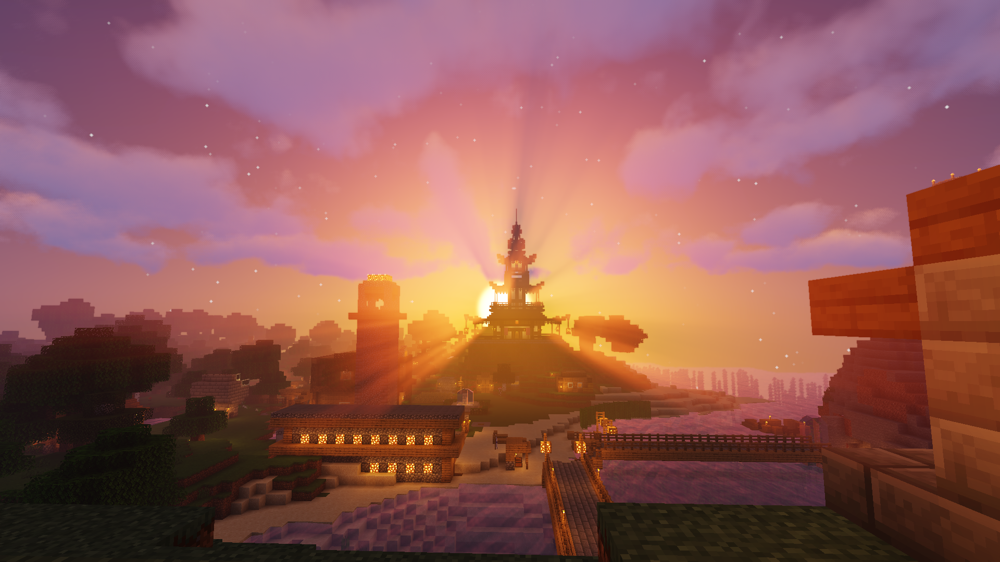
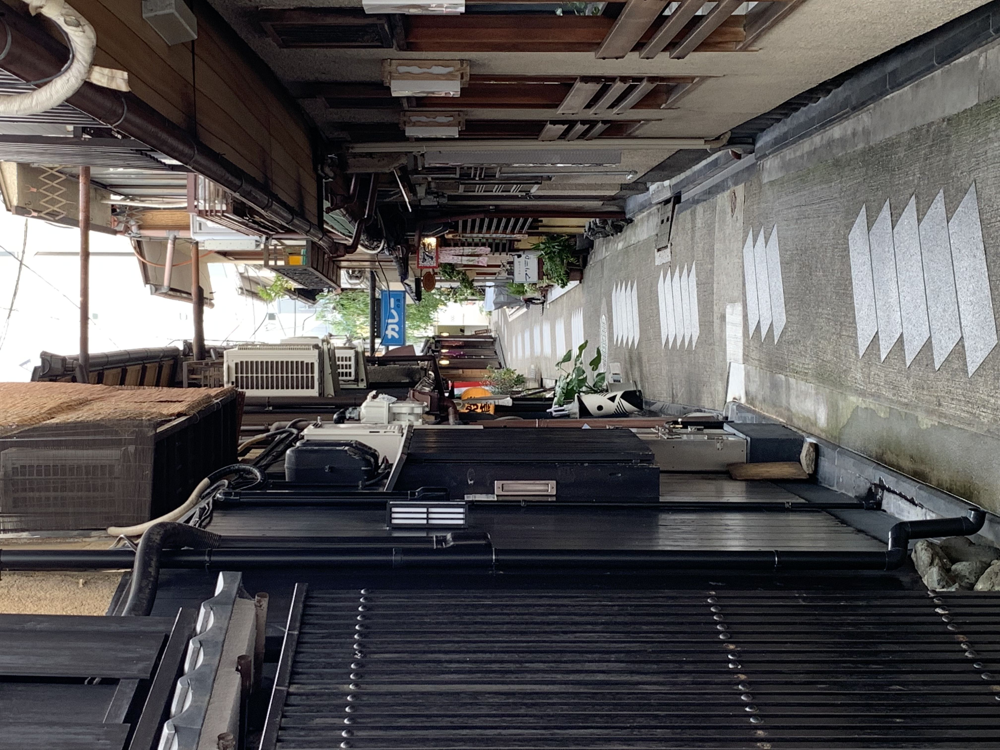
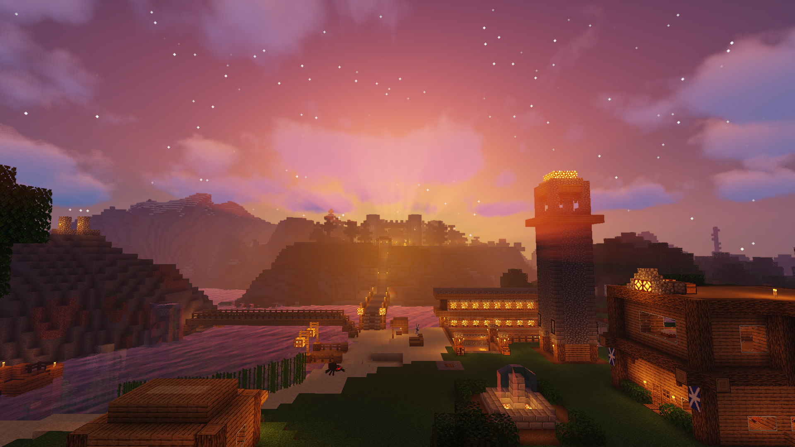

The Sun Temple
This is an image of a structure that me and my team built in minecraft.
This project was meant to show the different sides of our world together with "Castle on the Hill".
Together with the team we worked hard to express the beauty of different structures from different time periods.
It was enlightening working with people who had a lot of different ideas. With "The Sun Temple" we emphasized the pointy roofs of traditional japanese temples.

Backstreet of Kyoto
This was a project intended to capture the back alleys and the not so visited areas of Kyoto.
This was a really fascinating project where I learned alot about perspectives.
How I view something may differ from what others see.
While my group was walking and taking pictures of these alleys in Kyoto, we all looked for something different from one another.
Both the task itself and the pictures we took was interpred differently and it helped me realize that one can look at the same thing from different sides.
I am now more skilled at being able to identify different approaches to the same problem, and able to switch to the more effective one.

Castle on the Hill
As with "The Sun Temple" this project was intended to show some of the different sides
and cultures of the world. "Castle on the Hill" had many different iterations,
but in the end we ended up going for a small castle. This was a caricature to the grand castles